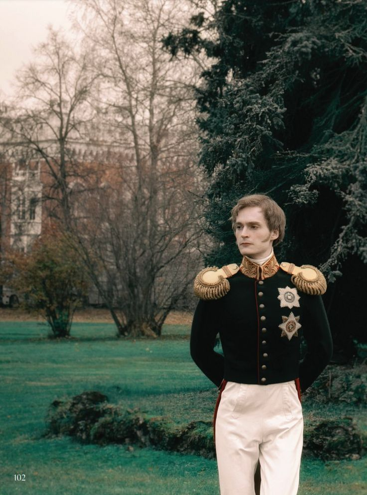
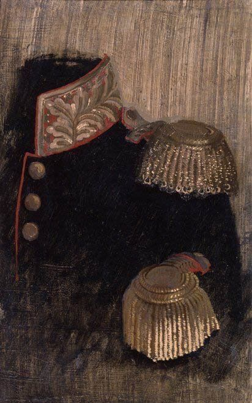
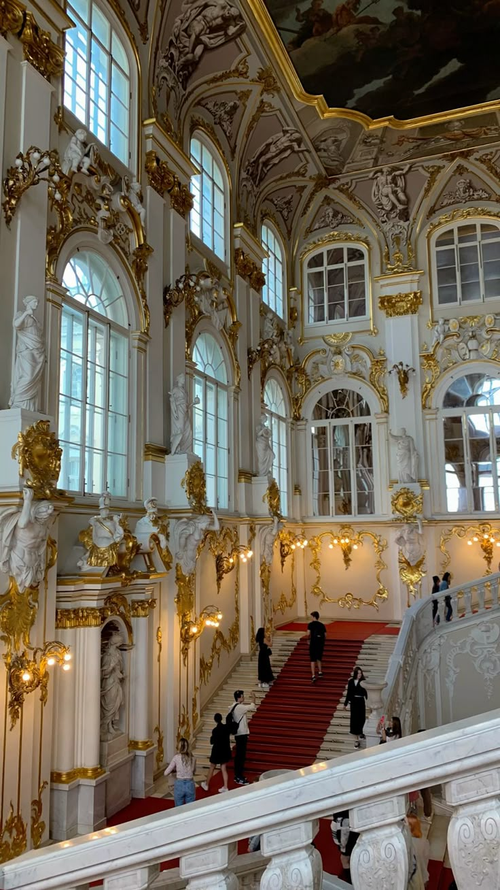
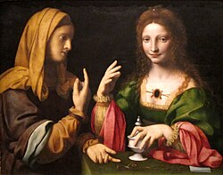
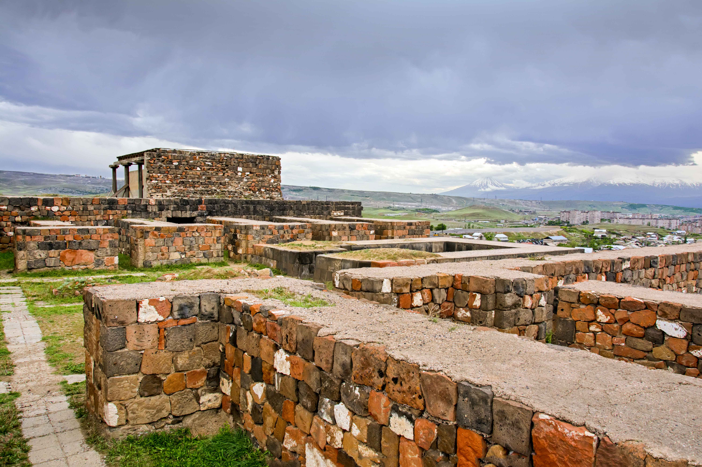
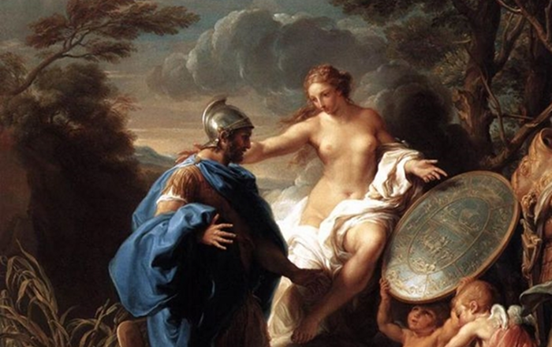

Выставки
-

Искусство портрета
Выставка посвящена всемирной истории портрета, от зарождения портретных форм до наших дней. Для выставки отобраны лучшие образцы портретного искусства из собрания Эрмитажа, представляющие разные исторические эпохи и цивилизации. Коллекция Государственного Эрмитажа позволяет проиллюстрировать портрет в различных видах искусства: в скульптуре, живописи, графике, прикладном искусстве, нумизматике, фотографии. Всего будет показано около 600 музейных предметов.
8 декабря 2025 - 29 марта 2026
-

14 декабря 1825 года
Выставка посвящена восстанию декабристов, состоявшемуся на Сенатской площади в Санкт-Петербурге 14 декабря 1825 года. Наряду с победой в Отечественной войне 1812 года это событие до Октябрьской революции 1917 года считалось важнейшим в жизни страны. Выставка готовится совместно с Государственным архивом Российской Федерации.
13 декабря 2025 - 5 апреля 2026
-

Музейный детектив
Выставка посвящена одному из уникальных произведений античной пластики – позолоченной бронзовой статуе «Виктория Кальватоне». Созданные для выставки 3D-модели позволят прикоснуться к вечности буквально кончиками пальцев. Предполагается новый, инновационный формат метаиммерсивной выставки с элементами детективного расследования. Выставка должна стереть грань между виртуальным и реальным миром и превратить застывшее окружающее пространство в движущийся интерактивный мир, наполненный яркими художественными образами.
15 февраля 2026 - 31 мая 2026
-

Бернардино Луини
17 октября 2025 года в Аполлоновом зале Зимнего дворца открылась выставка, посвящённая одному из важнейших последователей Леонардо да Винчи и крупнейшему художнику ломбардской школы живописи эпохи Ренессанса, — «Бернардино Луини. К завершению реставрации». В эрмитажном собрании три работы Бернардино Луини, и все они показаны на выставке: «Святой Себастьян», «Святая Екатерина» и «Распятие с Мадонной, святыми Павлом, Марией Магдалиной, Иоанном и Франциском».
18 октября 2025 - 23 ноября 2025
-

Уголок Эребуни в Эрмитаже
5 февраля 2024 года в зале Культуры и искусства Урарту открывается выставка «Уголок Эребуни в Эрмитаже». История раскопок двух урартских крепостей превратила урартологию из филологической науки в историческую. Сенсационные массовые находки уникальных вещей в погибшем при штурме Кармир-блуре / Тейшебаини сделали урартскую культуру осязаемой. Раскопки Арин-берда порадовали всех фресками и потрясли именем Эребуни. История города приобрела другое измерение.
15 февраля 2024 - 15 февраля 2026
